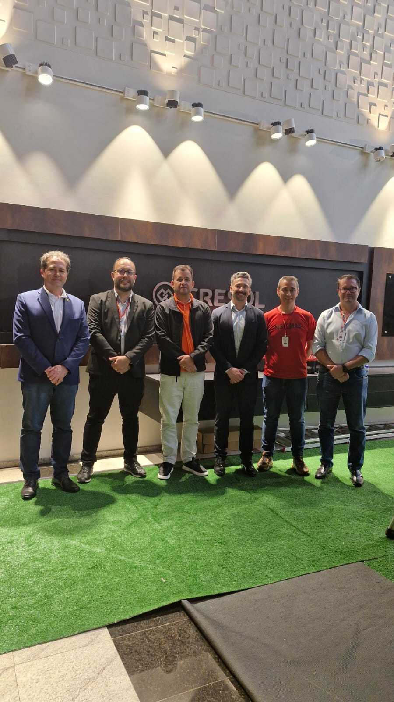
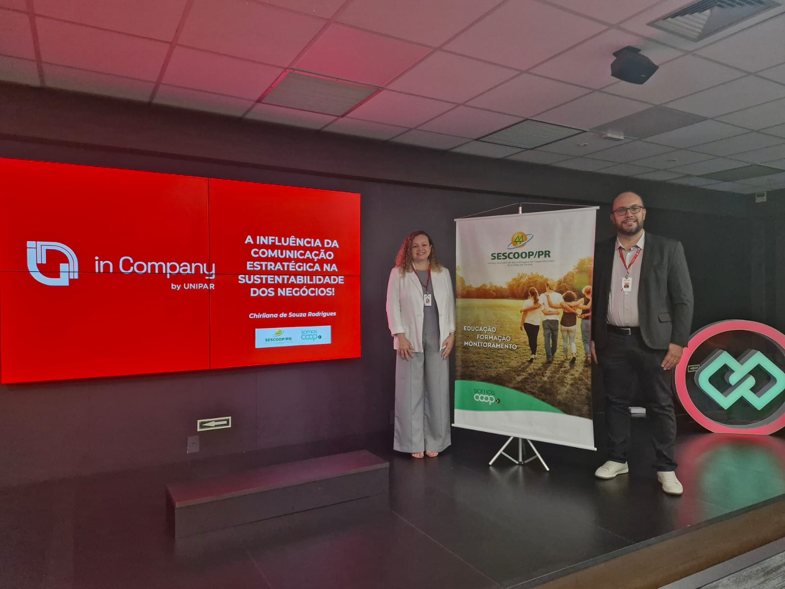
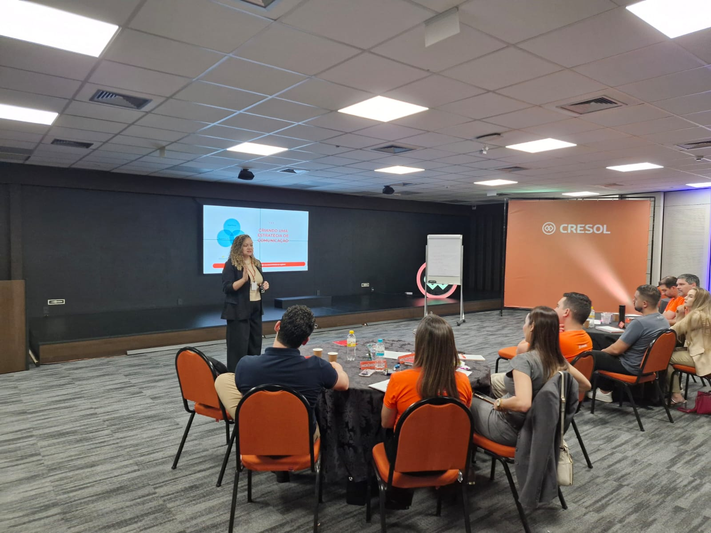
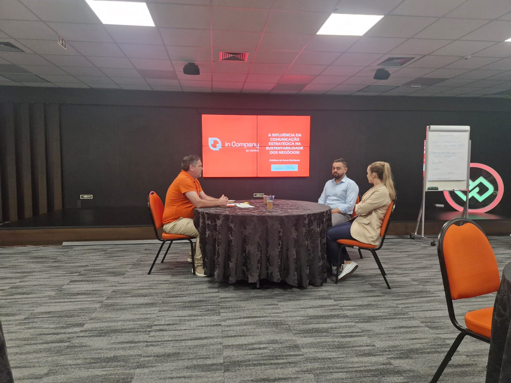
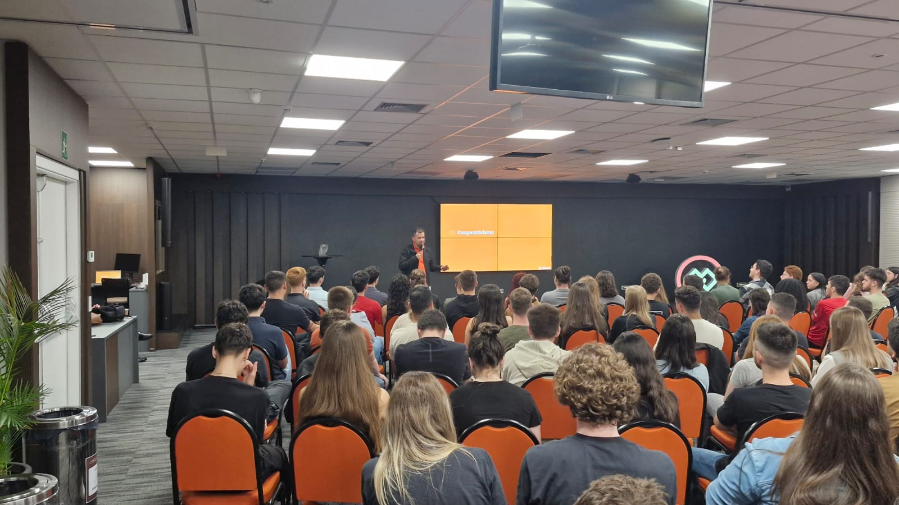

Comunicação Estratégica e Sustentabilidade nos Negócios
Cresol Cooperativa
Programa desenvolvido pela Unipar In Company em parceria com a Cresol Cooperativa e o Sistema Ocepar, voltado à formação dos gerentes de negócios em comunicação estratégica, sustentabilidade e desenvolvimento profissional no contexto cooperativista.

Conhecimento para fortalecer pessoas, negócios e o cooperativismo
O desenvolvimento de profissionais preparados para os novos desafios da gestão exige uma formação que vá além dos conhecimentos técnicos. É necessário compreender pessoas, negócios, comunicação, sustentabilidade e as transformações que impactam as organizações.
Com essa proposta, a Unipar In Company realizou o curso Comunicação Estratégica e Sustentabilidade nos Negócios, destinado aos gerentes de negócios da Cresol Cooperativa, em Francisco Beltrão.
A iniciativa une educação, experiência profissional e os princípios do cooperativismo, criando um espaço de aprendizagem voltado ao desenvolvimento de competências que podem ser aplicadas diretamente na realidade dos negócios.
Ministrado pela professora Chirliana Souza, o curso proporcionou momentos de conhecimento, reflexão e troca de experiências sobre temas fundamentais para uma atuação profissional cada vez mais estratégica.
Comunicação que aproxima pessoas e fortalece negócios
A comunicação ocupa um papel fundamental na construção de relacionamentos e no desenvolvimento das organizações.
Em ambientes cooperativos, comunicar de maneira clara, estratégica e eficiente contribui para fortalecer vínculos, alinhar objetivos e criar relações mais próximas entre profissionais, cooperados e diferentes públicos.
A formação buscou ampliar a compreensão dos participantes sobre a comunicação como uma ferramenta estratégica para a gestão e para a construção de relacionamentos mais consistentes.
Mais do que transmitir informações, comunicar estrategicamente significa compreender contextos, ouvir, estabelecer conexões e transformar mensagens em ações capazes de gerar valor.

Estratégia, responsabilidade e visão de futuro
A sustentabilidade representa um dos grandes desafios das organizações contemporâneas.
Para além da dimensão ambiental, pensar em sustentabilidade significa compreender como as decisões tomadas hoje impactam os resultados, as pessoas, as comunidades e o futuro dos negócios.
No contexto cooperativista, essa visão ganha ainda mais relevância, considerando o compromisso das cooperativas com o desenvolvimento econômico e social das regiões onde estão presentes.
O curso proporcionou aos participantes uma reflexão sobre como a sustentabilidade pode estar integrada à estratégia e à atuação profissional.

Desenvolvendo profissionais para novos desafios
Os gerentes de negócios desempenham um papel fundamental na relação entre estratégia, pessoas e resultados.
Por isso, investir no desenvolvimento desses profissionais significa fortalecer a capacidade das organizações de enfrentar mudanças, identificar oportunidades e construir relações de longo prazo.
A formação buscou contribuir para o desenvolvimento de competências que auxiliem os gestores na tomada de decisões, na comunicação e na construção de estratégias alinhadas aos objetivos da organização.

Conhecimento conectado à realidade profissional
Um dos diferenciais da iniciativa está na conexão entre conhecimento e prática.
A formação foi desenvolvida para proporcionar aos participantes não apenas acesso a conceitos, mas também momentos de reflexão sobre situações e desafios presentes no cotidiano profissional.
A troca de experiências entre os participantes amplia o aprendizado e permite que diferentes perspectivas sejam compartilhadas.
Com a condução da professora Chirliana Souza, o curso criou um ambiente de aprendizagem voltado à participação, à reflexão e à aplicação dos conhecimentos.

Educação para fortalecer um modelo de desenvolvimento
O cooperativismo possui características próprias e exige profissionais preparados para compreender seus princípios, desafios e oportunidades.
Nesse contexto, a formação continuada contribui para fortalecer as competências dos profissionais e, consequentemente, das próprias cooperativas.
A iniciativa realizada com a Cresol representa a aproximação entre conhecimento acadêmico e realidade cooperativista, promovendo uma formação conectada às necessidades do setor.
Investir nas pessoas é também investir no fortalecimento do cooperativismo e na capacidade de gerar desenvolvimento para cooperados, organizações e comunidades.

Uma parceria entre universidade, cooperativa e sistema cooperativista
A realização do curso demonstra a força da parceria entre Unipar In Company, Cresol Cooperativa e Sistema Ocepar.
A Unipar In Company contribui com sua experiência acadêmica e estrutura de educação corporativa, desenvolvendo formações alinhadas aos desafios das organizações.
A Cresol aproxima o processo de aprendizagem da realidade de seus profissionais e dos desafios encontrados diariamente na gestão dos negócios.
O Sistema Ocepar fortalece essa construção ao contribuir para o desenvolvimento e a qualificação do cooperativismo paranaense.
Essa união cria um ambiente no qual educação e cooperação caminham juntas em direção ao desenvolvimento de pessoas e organizações.
Formação que gera evolução
A experiência realizada com a Cresol reforça o papel da educação corporativa como ferramenta estratégica para o desenvolvimento organizacional.
Programas de formação permitem que profissionais ampliem conhecimentos, desenvolvam novas competências e encontrem diferentes perspectivas para enfrentar os desafios do trabalho.
Mais do que capacitar, a educação corporativa cria condições para que o conhecimento seja transformado em comportamento, decisões e resultados.
Valorização das pessoas e desenvolvimento contínuo
A formação em Comunicação Estratégica e Sustentabilidade nos Negócios representa uma iniciativa voltada à valorização das pessoas e ao desenvolvimento contínuo dos profissionais da Cresol.
Ao conectar conhecimento acadêmico, experiência profissional e os princípios do cooperativismo, o projeto contribui para preparar gestores para um cenário cada vez mais dinâmico e desafiador.
Comunicação Estratégica e Sustentabilidade nos Negócios. Conhecimento para desenvolver gestores, fortalecer negócios e construir um cooperativismo preparado para o futuro.
Cresol + Unipar In Company + Sistema Ocepar. Uma parceria pela formação, pelo desenvolvimento profissional e pelo fortalecimento da cooperação.
Unipar In Company — Educação que transforma conhecimento em evolução.